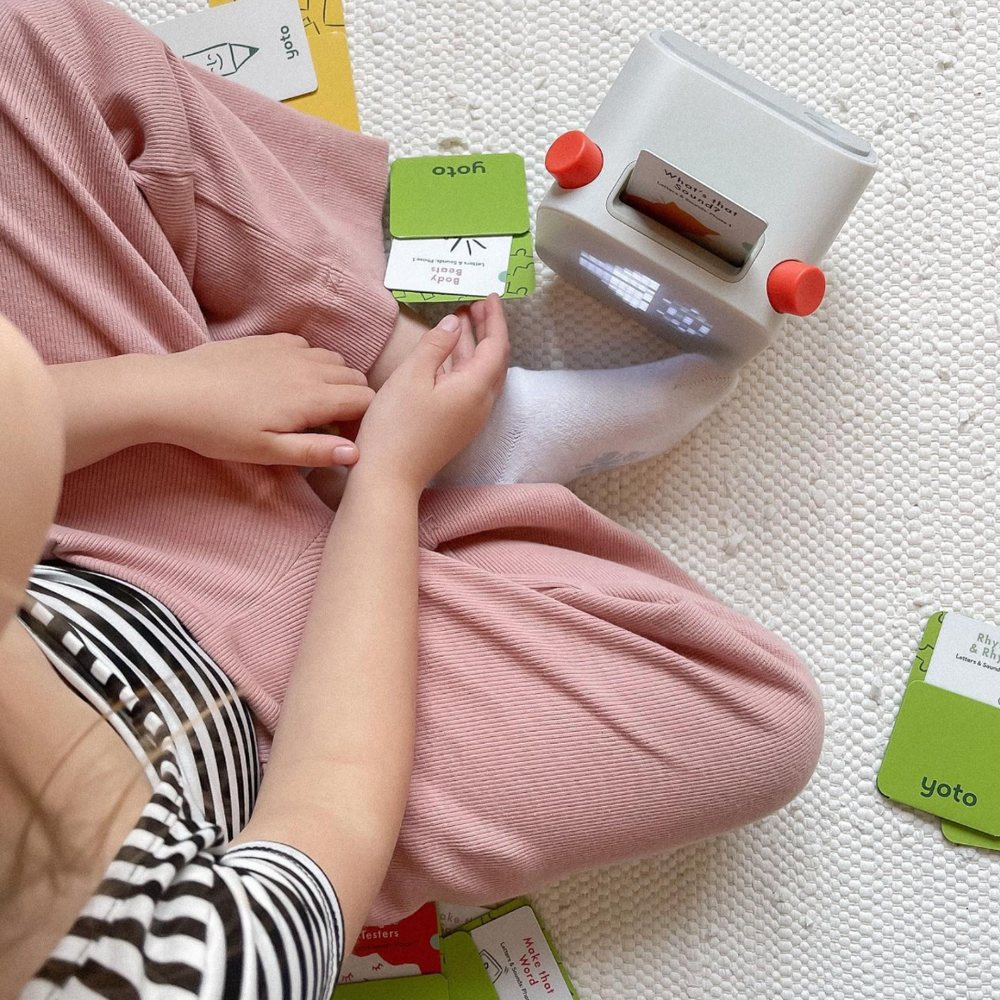
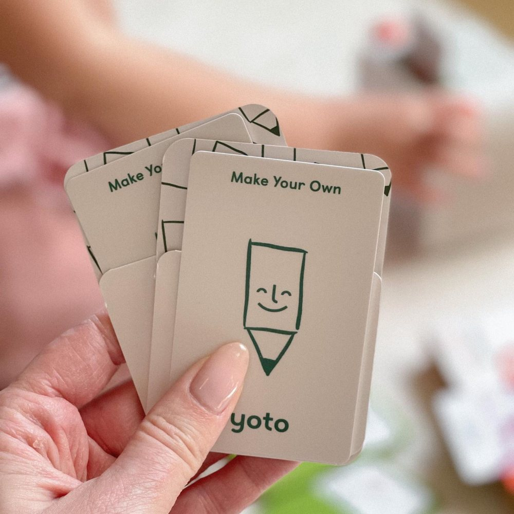
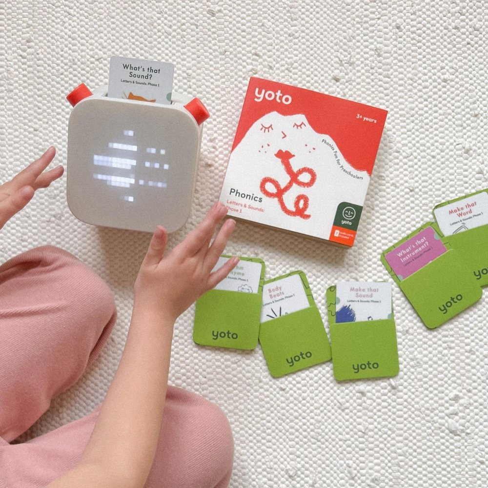
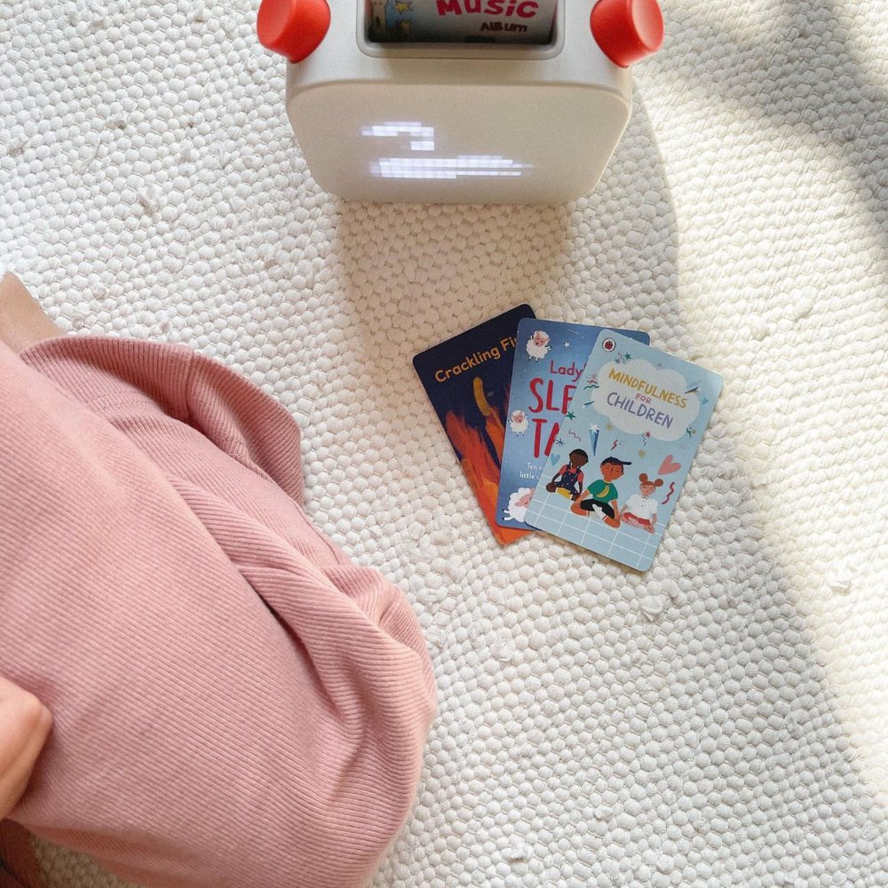
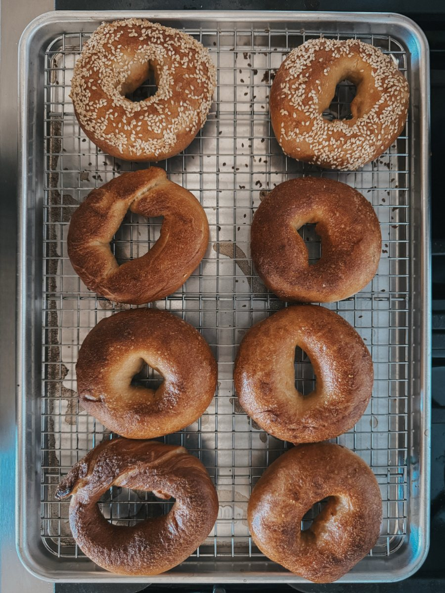

Marley Spoon
Reel · Mar 2025I made a Reel about how deciding what's for dinner wears me out, and how Marley Spoon let me plan a week of dinners in minutes.
- Views
- —
- Interactions
- —
- Comments
- —
A digital diary of a homebody in Boulder, Colorado.
Women make up — of my Instagram followers, and — of my followers are 35 to 44.
This is my Instagram audience as of November 19, 2026.
— people subscribe to my Substack. They live in — US states and — countries.
| Substack | Share of my readers |
|---|
Each bar is one Reel, and the dashed line marks the median. Point at a bar to see the Reel. I test new ideas with trial Reels, which Instagram shows first to people who don't follow me yet, so some ideas appear more than once.
My most-viewed Reel reached — accounts and was shared — times.
| Essay | Published | Views | Opened |
|---|
Opened is the share of email subscribers who opened the essay, as Substack reports it.
I made a Reel about how deciding what's for dinner wears me out, and how Marley Spoon let me plan a week of dinners in minutes.
I made a Reel with Wonderbelly about the antacids that let me keep enjoying my lattes, and it pointed people to Target to buy them. It ran on both my account and Wonderbelly's.




I shared why the Yoto Player replaced the iPad for my kids' music and audiobooks, with a 10% discount link and a blog post about how my kids used it.
In 2021 I also partnered with Lettuce Grow on a post and a takeover of their Instagram Stories about growing my own produce at home. See the post.
Each figure comes from the post's own Instagram insights. Instagram shows no view count for my 2021 posts.
My Instagram is built on four kinds of posts.

PhotoHomemade bagelsRates and packages are available on request. Ask me about usage rights and partnership ads.
You can find more of my work at erinchristopoulos.com.
I'd love to try it first, because I only vouch for things I've actually used. Sending it doesn't commit either of us to anything.
I'll make it part of my everyday routine for a few weeks, the same way I would if I'd bought it myself.
If I love it and I'm excited for my audience to know about it, we plan the partnership together. If it isn't the right fit for me, I'll tell you honestly why, and that conversation stays between us.
Send me a note about your brand and what you have in mind.